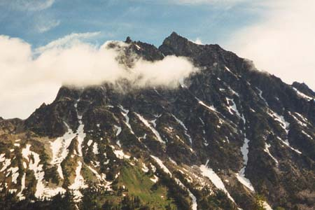
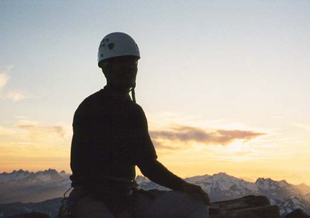
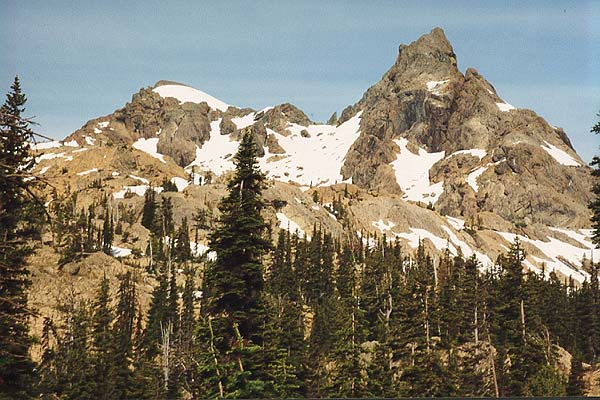
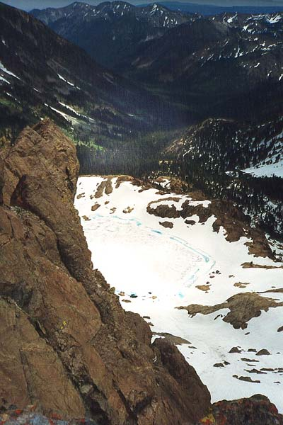
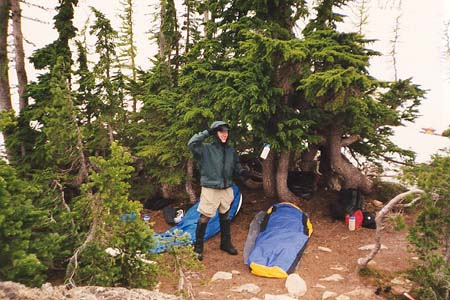
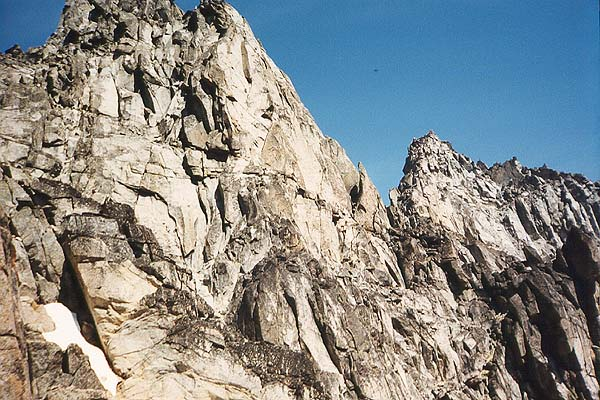
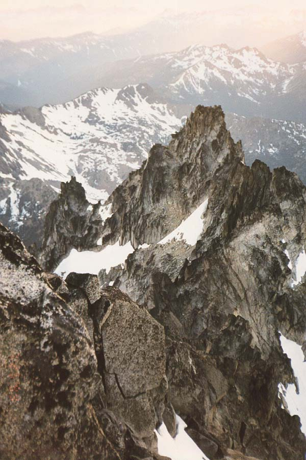
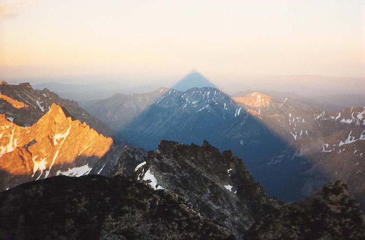
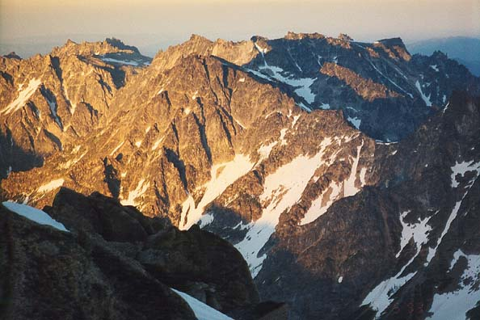
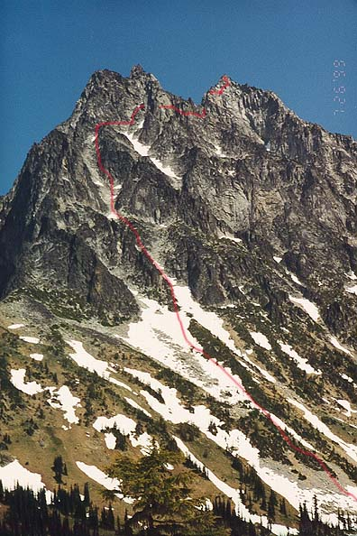

Mount Stuart, West Ridge
- West Ridge (5.6, III)
- July 24-26, 1999

Could it be?
I struggled to clamber over a jumble of boulders almost afraid of what I would see beyond. The rope prevented me from going any further without great effort, having snaked over and between rocks beneath me. I let myself believe the good news as I searched for a place to belay Steve up from. The light was going fast, but I could watch the darkening valley with something like triumph. The hours of perpetual uncertainty had taken their toll, and it seemed a great weight was lifted: we were at the top! At the top of Mt. Stuart after a long and difficult day. Darkness was here, we would not make it down, but we had made it up, and going down was easy via the Cascadian Colouir, down the gentle side of the mountain.



Steve arrived, jangling with the paltry protection I had placed in the rock, his nerves equally frazzled. The final steps to the summit, suffused with meaning. Tired limbs, standing on rare flat earth, and the last golden rays of sun. Steve and I both impressed by how much the climb had asked of us. Darkness crept forward, and warm red and orange faded to cool blue and purple. Night caught us just below the summit, scrambling between blocks and squinting at lonely Cairns, which kept us on the easiest path. Wordlessly, we each began searching for a hole or cave to block the wind that might come to steal our warmth. Steve found the best spot - a nook which we eyed distrustfully, knowing how long we would live there, how long each minute of an unprotected, unplanned bivouac at 9000 feet might last.
But the weather was in our favor, with clear skies and only a light wind. Soon we were settled in, drinking a little water and listening to my noisy “space blanket” as it tore itself to pieces during the first hours. The events of the previous two days were recalled and discussed…



A chill wind greeted us at the trailhead and we didn’t warm up until walking a ways and grumbling suitably about the heavy packs. We would take this trail to Ingalls Pass, and climb Ingalls Peak via the South Ridge that afternoon. As we looked forward to this we admired Esmeralda Peak across the valley and planned a future exploration of it’s somewhat brushy cliffs. We passed two women and a baby out for his first visit to Ingalls Lake. Then we met Gerrod, who was thinking of climbing the West Ridge of Stuart himself. The three of us continued up from the trees and traversed a long, hot distance until reaching continual snow just below the pass. Finally, we got our first glimpse of Stuart at the pass, and it was impressive! Stained black rock, innumerable towers and ridges, and clouds whisking by at mid-height in the strong wind. Gerrod decided to visit Ingalls Peak with us, so we dropped our packs at a suitable place and headed straight up a gentle colouir to the base of the route.
We were protected by the “Dogtooth Crags” which blocked the bitter wind, but could see that one pitch up was a completely different world. A pair of climbers were descending the route by rappel, and they kept disappearing behind white threads of cloud. A party of three from Pennsylvania started the route, and we continued up after. Gerrod soloed the first pitch, intending to solo the whole thing. We started to, but near the top of the easy first pitch was some unnerving marbled rock, as slippery as ice. We descended a little and Steve led this section. It took some getting used to, but there were good foot jams and we learned to recognize the slippery stuff.
Now out of the protection of the Dogtooth Crags, we zipped up our jackets, and Steve led up and right to a chockstone on the ridge. He down-climbed a little to place the belay at the center of the ridge. I cleaned the one or two pieces of protection, and met him at the top of the second pitch. The Pennsylvania party had left one member huddled below, and Gerrod had joined their rope. They were rappelling down as I started the third pitch. Not entirely sure of the way, I climbed a blocky section on the left side of the ridge, then traversed right to join a central crack that led up to the bolted belay station. This climbing was fun, with more slippery marble - balance and friction moves. I shared the belay with the descending party, everyone assuring us that Steve and I couldn’t descend the route with our single 50 meter rope. They zipped down on a double rope rappel as I brought Steve up, and offered us the chance to rappel with them. We talked it over, and decided to continue on.
Steve took off from the fantastically exposed belay stance, finding his way quickly to the final station. The weather was getting worse. Now Stuart was permanently hidden behind clouds, and I was hunched under my hood, paying out rope. Happy to be moving, I climbed quickly and met Steve in an even more miserable location, directly exposed to the fast, fast wind! From his excellent vantage point, you could see clouds whipping across the valley like a time-lapse photograph. We untied from the rope, and scrambled on easy ground to the summit. We lingered there as long as possible, enjoying the moments of sun, and savoring the view of Ingalls Lake, still snow-covered but with patches of brilliant blue. Mt. Stuart had become a ghostly Frankenstein castle, black and shrouded.
The first rappel went perfectly, but the second wouldn’t get us to the top of the 2nd pitch. Luckily, Steve’s reconnaissance on the right side of the ridge revealed that by rappelling to the chockstone there, some easy down-climbing could get us down to the top of the first pitch. There was an intermediate anchor before this, a truly frightening one. Someone had threaded a sling behind a loose cobble of rocks and called it good enough to rappel on. We preferred to down-climb, and this worked very well. One final rappel and a bit more down-climbing got us to the base.
We had some cause to worry though. We’d passed a party going up and off route. They wore shorts and t-shirts and were jumping up and down at the belay station to stay warm. They were going to belay from the pitiful rock cobble, and I was able to tell them to keep going to the bolts above. As we descended the snow, Steve saw their girlfriends huddled for warmth near the base of the route. They also wore shorts. Going down we worried about this party, and watched for them to descend from our camp in the basin.



It was starting to look like winter, so we gave up on Stuart. The West Ridge was fully exposed to the incredible wind, and we felt it would be foolish to go up in those conditions. So our camp was far from the mountain, and we decided to spend Sunday exploring and bouldering on the many excellent orange granite rocks. Steve was fascinated by this rock, it looks crumbly, but is really solid.
We had couscous for dinner, very much livened up by the addition of Swiss cheese. We nearly came to blows trading the pot back and forth - never had we so relished a mountain meal!
A quart of hot chocolate to sip through the night, and we fell asleep, listening to the wind shake the trees above.
Well, Murphy’s Law got us! Morning was sunny, clear and hot. How could the weather change so quickly?!? Pretty disgusted about it, we decided to go have a look at the base of the route, and come back in August. We packed as if for the climb though, bringing rope and other gear. The evening before, we had walked from camp to Ingalls Lake, impressed by how far away from it we were. It seemed easiest to bomb down into the valley and up the other side to reach the base of the route, a long snow colouir that led up to broken rock. Well, this was the harder way! Crashing through the brush, and rounding corner after corner, we crossed the Ingalls Creek trail, 1000 feet down from our camp. We slowly regained this elevation, feeling strangely weak and tired. Pausing to drink water, our spirits improved and we enjoyed the new alpine scenery of rock, snow and the occasional shrub-like tree. A sharp whistle warned us to go no further, but we didn’t heed it. Reaching the steep and hard snow of the colouir, an excitement grew as we put on crampons. Suddenly in a hurry (just to see the base of the route, of course!), I followed Steve up the steepening snow. It got to about 55 degrees and we switched to our specialized techniques. Steve did a “crabwalk,” moving almost backwards up the slope, and I switched from a duckwalk to French technique with the occasional front-pointed foot, crampon spikes biting just enough to hold the slope. Finally we reached the end of the snow, and admitted that we were climbing the route.
We filled the water bottles at a little seep, and changed to rock shoes. As I usually do, I whined about the now-heavy pack with boots, crampons, water, and all the other essentials in it. Steve is much better about this, and a model for me to emulate (I’m working on it!).
But now we had a delightful morning, bouldering with incredible exposure below. Time sped by and we each reveled in the joy of climbing, twisting this way, counterbalance and friction. We ran out of words to shout about the wildness, fun and sun! Intermissions came when we delicately stepped up moats between snow and rock, trying to keep the sticky rubber shoes dry. The mountain broke up into a bewildering array of craggy towers and ridges, and the valley grew more pastoral as we saw it through a narrowing chasm. Being pasted on the middle of a big mountain was such a grand experience! We were happy we committed to it.
Now choosing the proper way became a top priority. Beckey’s book did a good job of directing us, but there were many occasions when we searched for a boot print, or a section of rock with lichen scraped off by many hands and feet.
Reaching the ridge top, we looked down the other side, then traversed an easy path towards the true peak. The West Tower loomed very far away, and we would have to pass under it. Finally we came to a landmark - Long John Tower, and the climb we would have to make up it’s left side looked very steep. It was blocked by a gully filled with snow, but we found a way above the snow for the most part. At the base of the tower, we roped up and Steve took the lead. Right from the start, it was tricky, with a delicate traverse under an overhang of black rock. Steve crabbed upward, his backpack doing it’s best to send him off balance. He disappeared around a corner and I heard nothing for a long time. Finally, the rope came tight, and I followed, happy we had come so far without using the rope at all. Our elevation was 8200 feet or so, and we felt pretty close to the 9415 foot summit.
At the top of the tower, we unroped again, and discussed the way across to our next objective, the West Ridge Notch. It looked like many parties had gone down a ways on a series of sandy ledges. But a way across was blocked by very steep hard snow. We still had to cross this snow, but we did it higher up, where the ribbon was thinner. Changing back into boots and crampons, Steve patiently kicked steps into the snow wall. He declared it “grim duty,” occasionally blowing on his free hand to warm it. It was grim, because the drop below his feet was very great. I followed, and kicked up an easier slope that took us back to rock.
We kept the boots on and wound our way between towers, in one place finding an amazing little tunnel marked by a cairn. “At least we’re still on route!” I left my pack at the entrance to the tunnel, lowered myself into the dark cavern, and Steve lowered the pack to me on a sling. We repeated the procedure for him, and emerged on a ledge where we continued the traverse to the Notch. Here we split up. I down-climbed a very loose and scary gully to a sidewalk leading to the Notch. Steve stayed higher and found better rock.
We changed back to rock shoes as afternoon sun turned to early evening sun. We were sure we wouldn’t make it back to camp, but we still hoped to reach the trees, which was almost as good. Steve put me on belay, and I swung out onto the north side of the mountain, with a grand view of glaciers below. What a contrast with the baked, dry south side! All was cool stone, shadow, snow and ice. I placed a nut, then clipped an ancient iron piton as I willed my tiring body up to a small notch right on the ridge crest. From here, I belayed Steve up. I took another lead almost straight up, although the book describes a traverse, keeping low. We couldn’t find it.
I ended up at an obvious belay/rappel station with no idea how to continue. Steve came up and we discussed our options over water and Kris’s “Signature” gorp. Steve climbed out on the ridge crest, but couldn’t see a safe way around a bulky tower. He down-climbed to a long ledge, eyeing a steep crack ahead with pitons and a leftover carabiner. I rappelled down to here, cursing the waning light, and wondering how we got off track.
We were tired, and unable to see a way up from the ledge. The crack seemed to be our best bet, but it looked really hard. Steve got up there, and rigged an aid sling to a piton. The walls were holdless but he kept trying. Finally, Steve started cursing (I’d never heard him curse), a bad sign.
Moments later, “Falling!” and I saw the flash of a helmet and outstretched arms, then he was out of sight again. I barely felt a pull on the rope. “Steve! Steve! Are you okay!?” The incredibly vulnerability of our situation seemed magnified 1000 times. After an eternity he answered. “I’m okay, I’m fine.” He sounded pretty shaky, but he checked thoroughly for blood, and eased his weight onto the rope.
There was no time to get details of the accident. I lowered him off the fixed pin, and while he dealt with the shock I had another look around the corner. I couldn’t believe that what he had attempted was the route, it wasn’t supposed to be that hard! It was getting dark, and time was running out. I saw a way up, though there was no sign that it was the right way. But based on what had occurred I decided to trust what I could climb as opposed to what signs climbers had left before. In moments I was off, climbing hard and fast but not too fast. I had to remind myself not to let the fall affect how I climbed, because I was inclined to be reckless and move frantically. The mental game worked and I grew calmer.
I followed my nose, and 50 feet up was rewarded with a piton. I tiptoed up between two blocks, facing a sketchy traverse to the right under an overhang. The heavy rope drag convinced me to wait and find a belay spot. Steve came up, and sent me off again. I did the traverse, then the climbing soon became scrambling. With great relief and happiness, I saw the summit was just above and sat down happily to bring Steve up.
During the long, cold night we discussed down to the position of each hand and foot what had happened below. Steve’s aid sling was hanging in a very wide crack from the piton, and as he strained for a hold off to the side, the sling cantilevered his feet into the crack, sending him into a fall nearly upside down. He struck a ledge with his pack, which completely protected him, and didn’t fall any further because a foot was lodged in the aid sling (amazingly unhurt…I couldn’t believe there wasn’t at least a sprained ankle). It was about a 10-foot fall.
Anyway, we felt grateful to the mountain, for sparing us injuries and to the weather for remaining calm. We watched the moon arc across the sky, standing at attention at the apex, which was right over ghostly Mt. Rainier in the distance. As it began to descend, we began talking of the descent, now assured that it would happen!
I shared some “fruit leather” (fruit roll ups) with Steve, and was so glad I did! He loved this stuff, making a mouthful last for 10 minutes. This made me think of Kris and how thoughtfully she had picked this snack out as something new to try. I couldn’t wait to see her again! We sat on our packs, huddled for warmth, and talked about how crazy this whole thing was…
Happy to be moving, we followed more Cairns, nearly taking a wrong turn down Ulrich’s Colouir when we missed a clever side way through another rock tunnel. This took us around and to a cliff looking down on the Cascadian Colouir, and craggy Sherpa Peak, just beginning to get warm rays of sun. We climbed up a bit, stepping onto steep snow we’d have to descend for 300 feet to rocks below. We tested the snow, thinking we might want to wait until it softened, but finally we decided to go down. We made use of the deep plunge steps others had made in the afternoon.
After this, a long steep rocky trail, then more endless snow, and we found ourselves back in the world of trees, babbling brooks and birds. The trail was clever, but easily lost. Finally, 500 feet of cliffs separated us from easier terrain below and we lost the trail. Gamely, we traversed into the next valley over, happy to see an ocean of trees and brush.
But even this was hard, and constantly threw up new challenges. Thorns, deep brush, and then the mosquitoes that kept us moving. I remember a haze of lowering down steep slopes hand over hand on slide alder bushes, crashing into forest, then back to the slide alder. We were just creeping down, earning every 10 feet, amazed at how the ordeal just wouldn’t end!
Eventually, very weary, we reached the Ingalls Creek trail at 4000 feet. Happy to have put an end to uncertainty, we began the 4-mile trudge to camp. We had come up one side of the mountain and descended the other, so the walk was long. We moved pretty slowly, joking about our “old man” speed. At the end of the trail, we climbed snow to Ingalls Lake, then wearily continued to camp, finding it intact and heavenly. Steve filled our water bottles, and we settled in for an hour nap in the luxurious bivy sacks we hadn’t seen for so long. Ah, the joy of a sleeping bag! We ate a little, and packed slowly. The 4 miles and 3000 feet to drop to the car seemed to take forever, but I had a certain peace, and my mind was still. We only stopped once, and briefly, to drink water and take off our boots. Reaching sanctuary, we sped away, looking back with pride at the mountain that had taken everything we had.